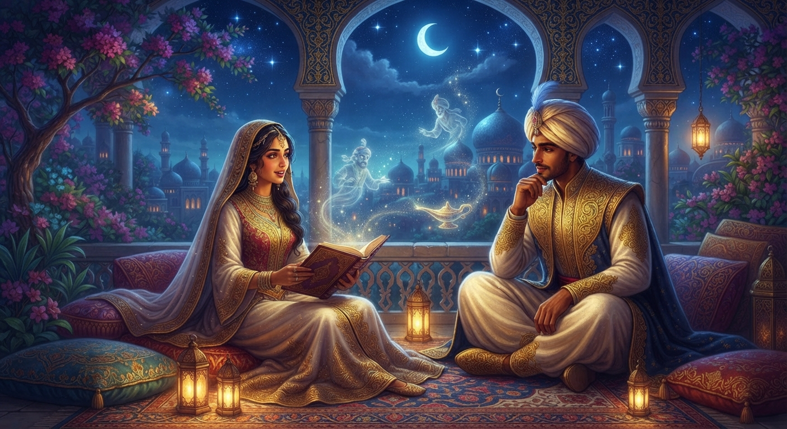
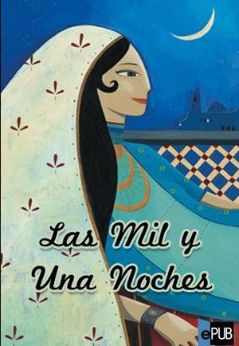

<meta charset="UTF-8">
<link rel="stylesheet" href="css/estilo1.css">
<link rel="stylesheet" href="css/libro1-estilos.css">
<link href="https://fonts.googleapis.com/css2?family=Open+Sans:wght@300;400;600;700&display=swap" rel="stylesheet">

<!-- Fragmento para inyectar en pagina.html (rutas relativas a pagina.html) -->
<article class="libro-detalle">

    <div class="libro-encabezado">
        <h2 class="titulo-seccion">Las mil y una noches</h2>
        <p class="libro-subtitulo">Relato: «Historia de Feliz-Bello y Feliz-Bella»</p>
    </div>

    <!-- Portada + ficha del cuento -->
    <section class="libro-ficha">
        <figure class="libro-portada">
            
            <figcaption>Ilustración de portada</figcaption>
        </figure>

        <div class="libro-datos">
            <h3>Ficha del cuento</h3>
            <ul>
                <li><strong>Nombre original:</strong> ألف ليلة وليلة (<em>Alf layla wa-layla</em>)</li>
                <li><strong>Nombre en español:</strong> Las mil y una noches</li>
                <li><strong>Relato:</strong> Historia de Feliz-Bello y Feliz-Bella</li>
                <li><strong>Autoría:</strong> Anónima y colectiva (recopilación de cuentos populares)</li>
                <li><strong>Época:</strong> Recopilación entre los siglos VIII y XIV aproximadamente</li>
                <li><strong>Origen:</strong> Medio Oriente</li>
                <li><strong>Género:</strong> Cuento romántico y de aventuras</li>
                <li><strong>Idioma original:</strong> Árabe</li>
            </ul>
        </div>
    </section>

    <!-- Audio -->
    <section class="libro-audio">
        <h3>Escucha la reseña</h3>
        <p>Toda la información de esta página, narrada en audio.</p>
        <audio controls preload="none">
            <source src="audios/feliz-bello-feliz-bella.mp3" type="audio/mpeg">
            Tu navegador no admite el elemento de audio.
        </audio>
    </section>

    <!-- Personajes -->
    <section class="libro-bloque">
        <h3>Personajes principales</h3>
        <div class="libro-personajes">
            <div class="libro-personaje">
                <h4>Feliz-Bello</h4>
                <p>Es el hijo del mercader Primavera. Es un joven hermoso que se enamora de Feliz-Bella.</p>
            </div>
            <div class="libro-personaje">
                <h4>Feliz-Bella</h4>
                <p>Es una joven hermosa, inteligente y talentosa para la música. Es la compañera y amada de Feliz-Bello.</p>
            </div>
            <div class="libro-personaje">
                <h4>Primavera</h4>
                <p>Es un rico mercader de la ciudad de Kufa y padre de Feliz-Bello.</p>
            </div>
            <div class="libro-personaje">
                <h4>Prosperidad</h4>
                <p>Es la madre de Feliz-Bella y trabaja en la casa del mercader Primavera.</p>
            </div>
            <div class="libro-personaje">
                <h4>El médico persa</h4>
                <p>Es un hombre sabio que ayuda a Feliz-Bello a encontrar a su amada.</p>
            </div>
            <div class="libro-personaje">
                <h4>Califa Abd El-Malek</h4>
                <p>Es el gobernante que recibe a Feliz-Bella en su palacio y finalmente permite que la pareja vuelva a reunirse.</p>
            </div>
        </div>
    </section>

    <!-- Resumen -->
    <section class="libro-bloque">
        <h3>Resumen</h3>
        <p>La historia comienza en la ciudad de Kufa, donde vive un rico mercader llamado Primavera. Cuando nace su hijo Feliz-Bello, compra a una esclava llamada Prosperidad junto con su pequeña hija, a quien decide llamar Feliz-Bella. Los dos niños crecen juntos y desarrollan un gran cariño.</p>
        <p>Cuando cumplen doce años, Feliz-Bello descubre que Feliz-Bella no es su hermana y decide que quiere casarse con ella. Con el permiso de sus padres, ambos se unen y viven felices durante varios años. Feliz-Bella también demuestra ser muy inteligente y talentosa para la música y la poesía.</p>
        <p>Sin embargo, un gobernador se entera de la belleza de Feliz-Bella y planea conseguirla para regalársela al califa. Para lograrlo, utiliza a una anciana que engaña a la joven y consigue separarla de Feliz-Bello. Después, es llevada al palacio del califa en Damasco.</p>
        <p>Feliz-Bello queda muy triste por la desaparición de su esposa. Con ayuda de un médico persa descubre dónde se encuentra y emprende un viaje para buscarla. Finalmente logra llegar hasta ella, pero ambos son descubiertos en el palacio y corren peligro.</p>
        <p>El califa escucha lo sucedido y comprende que los jóvenes se aman y que fueron víctimas de un engaño. Decide perdonarlos y permitir que regresen juntos a Kufa. Además, castiga al gobernador y nombra a Primavera en su lugar, por lo que la pareja vuelve a vivir feliz.</p>
        <p class="libro-nota">Aviso: este resumen revela los acontecimientos principales y el desenlace del relato.</p>
    </section>

    <!-- Enseñanzas -->
    <section class="libro-bloque">
        <h3>3 enseñanzas del cuento</h3>
        <ol class="libro-ensenanzas">
            <li>
                <strong>El amor verdadero supera las dificultades.</strong>
                Feliz-Bello no deja de buscar a Feliz-Bella a pesar de los obstáculos que enfrenta.
            </li>
            <li>
                <strong>No debemos confiar en los engaños.</strong>
                La anciana utiliza mentiras para separar a los protagonistas y causarles sufrimiento.
            </li>
            <li>
                <strong>La justicia debe actuar con prudencia.</strong>
                El califa escucha la historia antes de tomar una decisión y permite que los jóvenes se reúnan.
            </li>
        </ol>
    </section>

    <!-- Ilustraciones -->
    <section class="libro-bloque">
        <h3>Ilustraciones de la obra</h3>
        <div class="libro-galeria">
            <figure>
                
                <figcaption>Feliz-Bello y Feliz-Bella de pequeños</figcaption>
            </figure>
            <figure>
                
                <figcaption>La búsqueda de Feliz-Bella</figcaption>
            </figure>
            <figure>
                
                <figcaption>El reencuentro de los enamorados</figcaption>
            </figure>
        </div>
    </section>

    <!-- Dónde conseguirlo -->
    <section class="libro-bloque libro-comprar">
        <h3>Dónde conseguir el libro</h3>
        <ul>
            <li>
                <strong>Leer gratis (texto en español):</strong>
                <a href="https://es.wikisource.org/wiki/Las_mil_y_una_noches%3A237" target="_blank" rel="noopener">Historia de Feliz-Bello y Feliz-Bella en Wikisource</a>
            </li>
            <li>
                <strong>Consultar el libro completo:</strong>
                <a href="https://www.gutenberg.org/files/74065/74065-h/74065-h.htm" target="_blank" rel="noopener">Las mil noches y una noche, Tomo VII</a>
            </li>
        </ul>
    </section>

</article>